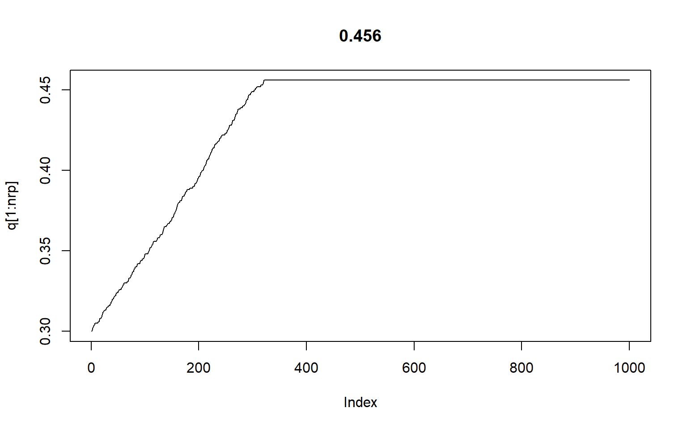

説明
- 緑本 P.171 例題：種子の生存確率
- 観測データ：\(N_i個の観察種子のうち、生きていて発芽能力があるものはy_i個、死んだ種子はN-y_i個」\)
- \(N_iを8とし、20個体について調べる\)
- \(\{y_1,y_2,...,y_{20}\}=\{4,3,4,5,5,2,3,1,4,0,1,5,5,6,5,4,4,5,3,4\}\)
- このとき、種子個体iの生存確率qは?
- ある個体\(i\)の生存種子数が\(y_i\)である確率（ヒストグラム（下図）を見ると過分散ではないので、二項分布と考える＝統計モデル、ただしパラメータqは不明なので、データからそれを求めたい）：\(p(y_i|q)={}_8 C_{y_1} \cdot q^{y_1} \cdot(1-q)^{8-{y_1}}\)
- 尤度関数：\(L(q)=\prod_i p(y_i|q)\) :パラメータq。qが変化すると尤度（モデルのもっともらしさ）が変化する。→尤度が最大になるqを求めればいい。これが真の値の推定値（頻度主義だから真の値がある）\(\hat{q}=最尤推定量\)
- 対数尤度関数：\(logL(q) = \Sigma_i\{y_ilog\ q+(8-y_i)\ log(1-q)\}+定数\)
- 過分散：通常の二項分布よりも分散が大きいこと。サンプルごとに傾向に違いがあるような場合に見られる。
- さらに脱線。尤度の説明もう一度。
- 緑本2.4節
- 尤度：あてはまりの良さ
- \(\lambda=3.56\)のポアソン分布に従う\(y_i\)が\(\{y_1,y_2,y_3\}=\{2,2,4\}\)であるときの尤度は\(p(y_1=2|\lambda=3.56)=0.180\), \(p(y_2=2|\lambda=3.56)=0.180\) \(p(y_3=4|\lambda=3.56)=0.190\)より、\(0.180\times0.180\times0.190=0.006156\)となる
- 一般化すると尤度\(L(\lambda)=\prod_{i}^{}p(yi|\lambda)=\prod_{i}\frac{\lambda^{y_i} exp(-\lambda)}{y_i!}\): \(尤度は平均\lambdaのポアソン分布におけるyiの確率の総乗として表される\)
- 尤度関数を対数変換したとき、その値が最も大きい（＝0に近い）とき最も尤度が大きい（＝あてはまりがいい）
- 対数尤度関数の傾きが0になるqを探す（緑本2.4節参照）＝対数尤度関数を偏微分する
- 対数尤度関数をqで偏微分：\(\frac{\partial\ logL(q)}{\partial\ q} = \Sigma\{\frac{y_i}{q} - \frac{8-y_i}{1-q}\} = 0\) ? で、ここから\(\hat{q}=\frac{\Sigma{y_i}}{8\times20} = \frac{73}{8\times20}=0.45625\)になるらしい（https://hazm.at/mox/math/statistics/inferential/binomial-distribution.html）
- これで解析的に最尤推定値\(\hat{q}\)を求めることができた!
- 下の対数尤度関数のピークとなるところに一致。
layout(matrix(1:2, ncol=2))
data<-c(4,3,4,5,5,2,3,1,4,0,1,5,5,6,5,4,4,5,3,4)
hist(data,breaks=c(-1:7))
logb<-function(x) sum(log(dbinom(data, 8, x)))
q <- seq(0.2, 0.7, 0.01)
plot(q, sapply(q, logb), type='l')
- ここまでは解析的に最尤推定量\(\hat{q}\)を求めることができたけど、それができない場合はどうするか。分布がややこしかったりすると尤度関数はもっとややこしくて解けなくなることがある。
- ここで、モンテカルロ法的なものが登場
- ふらふら試行錯誤による最尤推定（という例；緑本P173）
- qを離散化→qを連続値ではなく0.01刻みの離散値と考える
- 適当なqの初期値を決め、対数尤度を計算して評価。対数尤度関数に代入するだけ。パラメータはqだけだから計算可能。\(q=0.30の場合、-46.38になる\)。
- 以下は「ふらふら試行の最尤推定」手順
- qはとなりの値にしか変化できない->0.30スタートなら0.29か0.31
- となりのうちどちらを選ぶかはランダムに決定し、対数尤度が現在よりも大きければそちらに移動
- 0.31が選ばれた場合、対数尤度は-45.24となり、大きいから選択される -> qは0.31になる
- 仮に0.29が選ばれていれば、対数尤度は-47.62で小さくなってるので、qは0.30に戻る
- 下、適当に実装してみた例。qの初期値(qi)の値を変えても同じ値に収束するのがわかる。
- 緑本ではqを0.01刻みで動かしてるけど、下では0.001刻みにしている。緑本の例のように100回では収束せず400回くらいかかってるけど、収束した値は当然より真の値に近づく。
nrp<-1000
qi<-0.300
n<-8
data<-c(4,3,4,5,5,2,3,1,4,0,1,5,5,6,5,4,4,5,3,4)
logL<-numeric(nrp)
q<-numeric(nrp)
q[1]<-qi
for (rp in 1:nrp){
lh<-numeric(length(data))
for (d in 1:length(data)){
lh[d]<-choose(n,data[d])*q[rp]^data[d]*(1-q[rp])^(n-data[d])
}
logL[rp]<-log(prod(lh))
if (rp>1){
if (logL[rp]<logL[rp-1]){
q[rp]<-q[rp-1]
logL[rp]<-logL[rp-1]
}
}
if (round(runif(1))){
q[rp+1]<-q[rp]+0.001
}else{
q[rp+1]<-q[rp]-0.001
}
}
plot(q[1:nrp],type='l', main=q[nrp]) - このように、ランダムに生成した値を仮のqとして尤度を計算、尤度が高くなる場合だけ値を変化させるという方法で最尤値を推定することができた。緑本に書いてるように、ここまでのアルゴリズムは分かりやすさだけを考えた非効率なもの。実際の最尤推定はもっと効率いいそうです。 - メトロポリス法（MCMCアルゴリズムの一つ） - ふらふら試行錯誤をちょっと修正 1. \(q\)の初期値を決める(qi) 2. \(q\)を増やすか減らすかをランダムに決める(\(q^新\)) 3. 尤度を計算。大きくなってたら\(q^新\)を採用 - — ここまではふらふら試行錯誤と同じ — 4. 尤度が小さくなる場合でも、確率\(r\)で\(q\)を\(q^真\)に変更。\(r=\frac{L(q^新)}{L(q)}\)。 - じゃあ実装してみよう。
layout(matrix(1:2, ncol=2))
nrp<-100000
qi<-0.30
n<-8
data<-c(4,3,4,5,5,2,3,1,4,0,1,5,5,6,5,4,4,5,3,4)
logL<-numeric(nrp)
q<-numeric(nrp)
q[1]<-qi
lr<-1
for (rp in 1:nrp){
lh<-numeric(length(data))
for (d in 1:length(data)){
lh[d]<-choose(n,data[d])*q[rp]^data[d]*(1-q[rp])^(n-data[d])
}
logL[rp]<-log(prod(lh))
if (rp>1){
lr<-exp(logL[rp]-logL[rp-1])
if (runif(1)>lr){
#print(lr)
q[rp]<-q[rp-1]
logL[rp]<-logL[rp-1]
}
}
if (round(runif(1))){
q[rp+1]<-min(0.99,q[rp]+0.01)
}else{
q[rp+1]<-max(0.01,q[rp]-0.01)
}
}
plot(q[1:nrp],type='l', main=mean(q))
hist(q)
- とりあえず緑本の感じにはいってる。右側は生成したqのヒストグラム。
- MCMCは一意の最尤値に収束するのではなく、変化する値の生成を行う
- 定常分布
- 上のようなマルコフ連鎖によって生成した変数q
- マルコフ連鎖が「一定の条件」1を満たしているとき、qは定常分布(\(p(q|y_i)\))という確率分布に従う
- ただし、上でやったのは尤度をもとにしたマルコフ連鎖によってたくさんの変数を生成しただけ
- 十分な数、生成した変数の分布をみると、それは定常分布に近似する（上図）
- 定常分布：\(p(q|y_i)=\frac{L(q)}{\Sigma_q L(q)} \propto L(q)\)
- 二項分布というモデルとメトロポリス法によって、尤度に比例する\(q\)の確率分布を推定できた、ということ
- ベイズへ
- さっきの式の右辺に事前分布をかけると、ベイズのカーネル（6章で出てきた \((D|\theta)f(\theta)\), あるいは \([\Pi^5_{i=1}\frac{1}{\sqrt{2\pi}}exp(-\frac{(x_i-\theta)^2}{2})]\cdot[\frac{1}{\sqrt{20000\pi}}exp(-\frac{\theta^2}{20000})]\)(5つの売り上げデータをとるやつ)
- さっきまでやってた例が、そもそもベイズの枠組みとして考えられていたら…
- 植物の個体のうち生存しているものはいくつあるか
- 事前分布をおく
- 個数はパラメータqに従う二項分布と考え、20個体のデータから事後分布を作る。
- この事後分布は事前分布に尤度をかけたもの。事前分布が定数だとすると、定常分布と同じ
- ここまでの流れによって、MCMCの定常分布はベイズモデリングの事後分布であると言えることになる